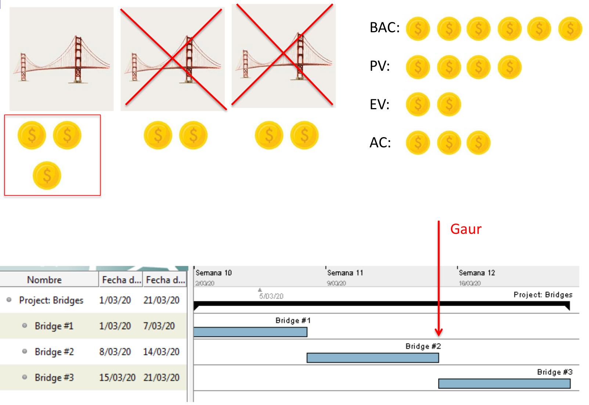

Proiektuen Kudeaketa (PK)
Jarraipena eta kontrola
Mikel Egaña Aranguren (mikel.egana@ehu.eus)

Mikel Egaña Aranguren
Mikel Egaña Aranguren (mikel.egana@ehu.eus)

https://github.com/mikel-egana-aranguren/EHU-GP-31

Zer egin behar dugu egon behar garen tokira bueltatzeko?
Arazo bat aurkitzerakoan ezin dugu zuzenean aldaketa bat egin:
Egin baino lehen, aldaketak proiektuaren murriztapenetan izango duen eragina aztertu beharko dugu - denbora, kostua, norainokoa, baliabideak, arriskuak eta kalitatea - eta soilik aztertu ondoren erabaki ea aldaketa egiteak merezi duen edo ez
| Izena | Deskribapena | Formula |
|---|---|---|
| BAC: Budget At Completion | Zenbat $ gastatuko duzun jarduera/proiektu osoan (aurrekontua) | --- |
| PV: Planned Value | Momentu honetaraino gastatutakoa planifikazioaren arabera | PV = BAC * %egindakoa planifikazioaren arabera |
| Izena | Deskribapena | Formula |
|---|---|---|
| EV: Earned Value | Momentu honetaraino gastatutakoa egindako lanaren %ren arabera | EV = BAC * %benetan egindako lana |
| AC: Actual Cost | Momentu honetaraino benetan gastatutakoa | --- |
| Izena | Deskribapena | Formula |
|---|---|---|
| SPI: Schedule Performance Index | Denboran atzeratuta edo aurreratuta zoazen jakiteko | SPI = EV/PV (<1: atzeratuta; >1: aurreratuta; =1: planifikazioak dionaren berdin) |
| CPI: Cost Performance Index | Aurrekontuaren barnean zauden edo ez jakiteko | CPI = EV/AC (<1: ez zaude barnean; >=1: barnean zaude) |
| Izena | Deskribapena | Formula |
|---|---|---|
| TCPI: To-complete Performance Index | Hemendik aurrera lortu behar duzun CPI aurrekontu barnean egoteko | TCPI = (BAC-EV)/(BAC-AC) |



Ariketa eGela-n